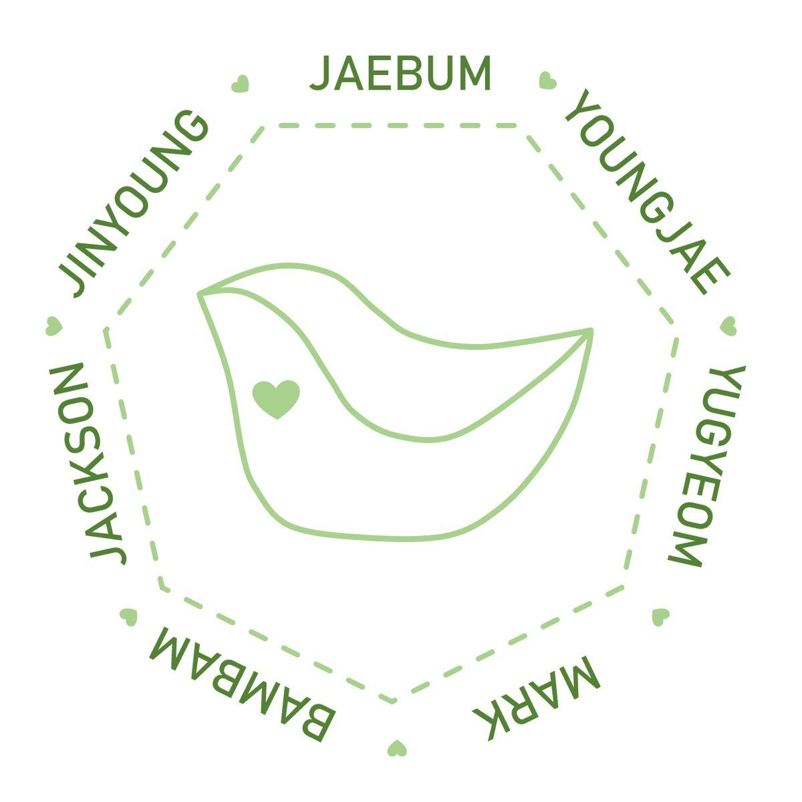

GOT7


Stage Name: BamBam (뱀뱀)
Birth Name: Kunpimook Bhuwakul Bambam (กันต์พิมุกต์ ภูวกุล)
Nationality: Thai
Position: Rapper, Vocalist
Birthday: May 2, 1997
Zodiac Sign: Taurus
Height: 178 cm (5’10″)
Weight: 60 kg (132 lbs)
Blood Type: B
Specialties: Rapping in Thai, dancing on girl bands songs
Hobbies: Listening to music
Favorite Food: Cheeseburger, Ddom yang kkoong
Favorite Artist: G-Dragon
Instagram: @bambam1a
Twitter: @bambam1a
Bambam Facts:
– He was born in Bangkok, Thailand.
– He is from Chinese descent, so he isn’t fully Thai.
– Family: mom, 2 older brothers, and 1 younger sister. (His dad died when he was very young.)
– He won 1st place in a “Rain Cover Dance” competition in Thailand back in 2007. He also won 2nd place in the “LG Entertainer” competition in Thailand in 2010.
– He became a JYP trainee in 2010.
– He has four cats: Pudding, Latte, Cupcake and King.